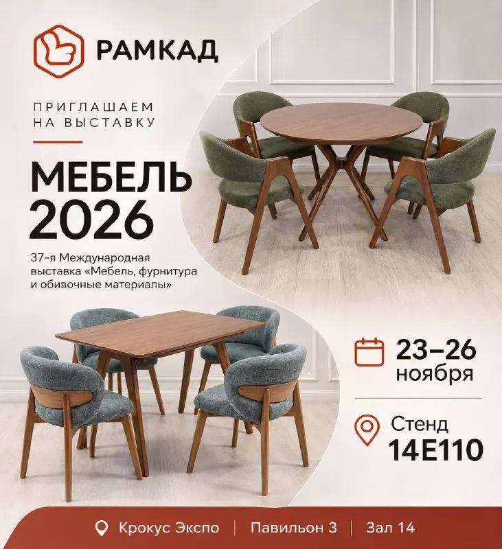

Уважаемые партнёры! Приглашаем вас посетить стенд мебельной фабрики РАМКАД на международной выставке «Мебель 2026»! Будем рады личной встрече, представим наши новинки и обсудим перспективы дальнейшего сотрудничества. 23–26 ноября 2026 года Крокус Экспо, павильон 3, зал 14 Стенд 14Е110 До встречи на выставке!
РАМКАДО выставке
